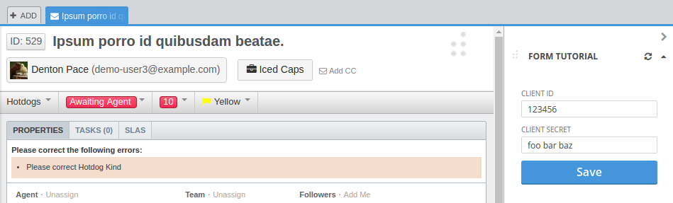

Overview
This tutorial will walk you through creating a DeskPRO app which has two pages. One page with a settings form and one page which displays the form values. App storage will be used to save the values, and the route object will be used to switch between the two pages.

To follow this tutorial you will need:
- DeskPRO running on your computer
- NPM 6 or greater
- Git 1.9 or greater
- A IDE or text editor
Step 1. Clone the boilerplate
The SDK boilerplate includes the basic app configuration and files to help developers get started writing apps.
git clone https://github.com/deskpro/deskproapps-boilerplate-react form-tutorial
cd form-tutorial
npm install
Step 2. Update the manifest
Edit the app configuration in package.json, which can be found in the app root directory. Change the "title" property to "Form Tutorial".
{
"deskpro": {
"version": "2.1.0",
"title": "Form Tutorial",
"isSingle": true,
"scope": "agent",
"targets": [
{
"target": "ticket-sidebar",
"url": "html/index.html"
}
],
"storage": [
{
"name": "settings",
"isBackendOnly": false,
"permRead": "EVERYBODY",
"permWrite": "EVERYBODY"
}
]
}
}
Explanation
- The "title" value will be shown in the app toolbar. See the manifest documentation for more information.
Step 3. Create the settings page
Create a new component with a form at src/main/javascript/PageForm.jsx.
// PageForm.jsx
import React from 'react';
import { sdkConnect } from 'deskpro-sdk-react';
import { Container } from 'deskpro-components';
import { Form, Input, Button } from 'deskpro-components/lib/bindings/redux-form';
class PageForm extends React.Component {
/**
* Changes to the index page after the form is submitted and
* the values have been written to app storage.
*
* @param {object} formValues
*/
handleSubmit = (formValues) => {
this.props.route.to('index');
};
/**
* @returns {XML}
*/
render() {
const { storage } = this.props;
const initialValues = (storage.app.settings || {});
return (
<Container>
<Form
name="settings"
initialValues={initialValues}
onSubmit={storage.onSubmitApp(this.handleSubmit)}
>
<Input
label="Client ID"
id="clientId"
name="clientId"
/>
<Input
label="Client Secret"
id="clientSecret"
name="clientSecret"
/>
<Button>
Save
</Button>
</Form>
</Container>
);
}
}
export default sdkConnect(PageForm);
Explanation
-
The form uses components from the deskpro-components library, which is included in the boilerplate by default.
-
The this.props.storage.onSubmitApp function is passed to the form
onSubmithandler to automatically save the submitted form values to app storage. The function saves the form values to the DeskPRO database using the formnameprop ("settings") as the storage key. See the storage documentation for more information. -
The
this.handleSubmitfunction is then called bythis.props.storage.onSubmitAppwith the form values. The function switches to the index page using the SDK router. See the route documentation for more information. -
The form is initialized with the existing settings by passing
this.props.storage.app.settingsto theinitialValuesprop. This works because values written to app storage using the key "settings" can be read from storage via the propthis.storage.app.settings. -
The
PageFormcomponent is connected to the SDK using thesdkConnectfunction. Which is required in order to read and write to storage. See the documentation on connecting components to the SDK for more information.
Note
The code uses (storage.app.settings || {}) to assign a default value because the settings will not exist the first time you run the app.
Note
The callback passed to this.props.storage.onSubmitApp is optional and may be omitted. Simply pass the function to the submit handler using onSubmit={this.props.storage.onSubmitApp} when post-processing of the form values is not required.
Step 4. Create the index page
Create a new component to display the form values at src/main/javascript/PageIndex.jsx.
// PageIndex.jsx
import React from 'react';
import { LinkButton, sdkConnect } from 'deskpro-sdk-react';
import { Container } from 'deskpro-components';
class PageIndex extends React.Component {
/**
* @returns {XML}
*/
render() {
const { storage } = this.props;
const settings = storage.app.settings;
return (
<Container>
<div>
<div>
Client ID: {settings.clientId}
</div>
<div>
Client Secret: {settings.clientSecret}
</div>
</div>
<LinkButton to="form">
Edit
</LinkButton>
</Container>
);
}
}
export default sdkConnect(PageIndex);

Explanation
-
The settings were saved to app storage using the key "settings" which means they can be read from storage from
this.props.storage.app.settings. See the storage documentation for more information. -
The
LinkButtoncomponent uses the SDK router to switch to the "form" page when clicked. See the route documentation for more information. -
The
PageIndexcomponent is connected to the SDK using thesdkConnectfunction. Which is required in order to read and write to storage. See the documentation on connecting components to the SDK for more information.
Step 5. Modify the app component
Edit the app component at src/main/javascript/App.jsx to look like the following code.
// App.jsx
import React from 'react';
import { Routes, Route } from 'deskpro-sdk-react';
import { Container } from 'deskpro-components';
import PageForm from './PageForm';
import PageIndex from './PageIndex';
const App = () => (
<Container>
<Routes>
<Route location="index" component={PageIndex} />
<Route location="form" component={PageForm} />
</Routes>
</Container>
);
export default App;
Explanation
- The
Routescomponents reads thethis.props.route.locationvalue to render theRoutewith the matchinglocationprop. See the Routes component documentation for more information.
Note
The App component is connected to the SDK automatically by the boilerplate, and does not need to be wrapped with sdkConnect.
Step 6. Run the dev server
Make sure DeskPRO is running on your computer, and then from the app root directory run the following command.
npm run dev
The dev script builds your app and starts a development server which communicates with DeskPRO to install the app. Open https://localhost/agent/?appstore.environment=development when the the dev command finishes building to view the finished app.